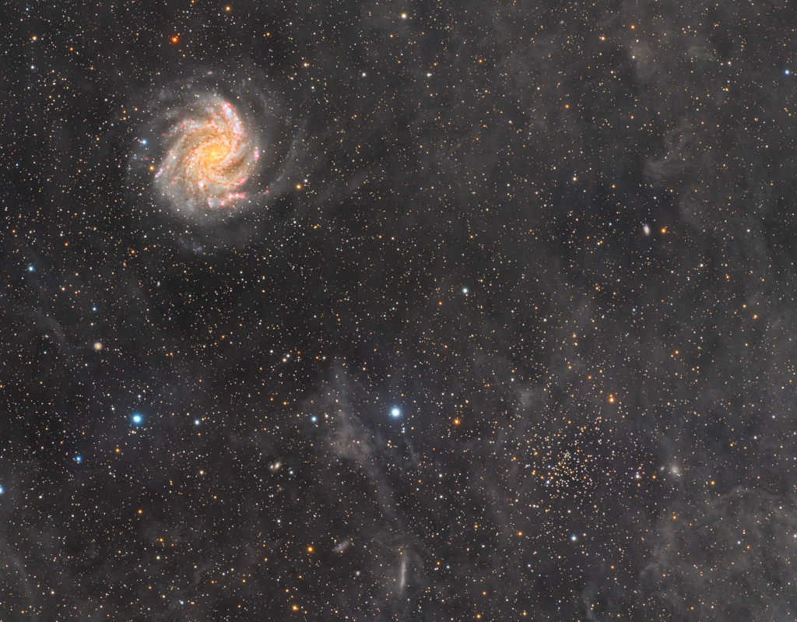

Article
Astronomy Picture of the Day Discover the cosmos! Each day a different image or photograph of our fascinating universe is featured, along with a brief explanation written by a professional astronomer. 2025 July 4 See Explanation. Clicking on the picture will download the highest resolution version available. NGC 6946 and NGC 6939 Image Credit & Copyright: Alberto Pisabarro Explanation: Face-on spiral galaxy NGC 6946 and open star cluster NGC 6939 share this cosmic snapshot, composed with over 68 hours of image data captured with a small telescope on planet Earth. The field of view spans spans about 1 degree or 2 full moons on the sky toward the northern constellation Cepheus. Seen through faint interstellar dust couds near the plane of our Milky Way galaxy, the stars of open cluster NGC 6939 are 5,600 light-years in the distance, near bottom right in the frame. Face-on spiral galaxy NGC 6946 is at top left, but lies some 22 million light-years away. In the last 100 years, 10 supernovae have been discovered in NGC 6946, the latest one seen in 2017. By comparison, the average rate of supernovae in our Milky Way is about 1 every 100 years or so. Of course, NGC 6946 is also known as The Fireworks Galaxy. Tomorrow's picture: squid game | Archive | Submissions | Index | Search | Calendar | RSS | Education | About APOD | Discuss | Authors & editors: Robert Nemiroff (MTU) & Jerry Bonnell (UMCP) NASA Official: Amber Straughn Specific rights apply. NASA Web Privacy, Accessibility, Notices; A service of: ASD at NASA / GSFC, NASA Science Activation & Michigan Tech. U..
